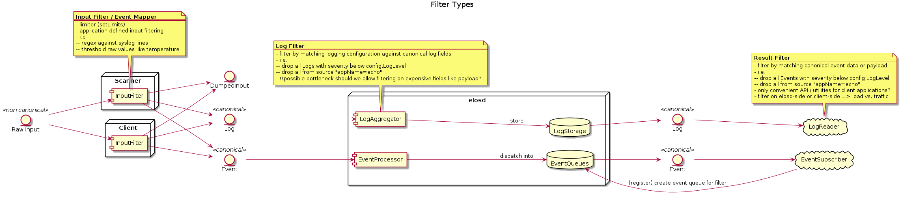

canonical event format¶
The canonical form for events has the following attributes:
date : unix timestamp in nano seconds resolution
source : a string that identifies the origin of this particular information
severity : when the message gets classified it is mapped to a severity value defined by this project.
hardware/hypervisor id : an unique identifier for the hardware, produced this particular information.
message code : used to hide information (from security perspective), thus an information has a meaning without providing a payload (text)
classification : a set of flags to categorize events.
payload: the actual payload of the information (text, number, structs))
The representation of an event look like:
As internal C-Struct :
struct elosEvent {
struct timespec date;
struct elosEventSource_t *source;
enum elosSeverityE_t severity;
char* hardwareid;
u64 classification;
enum elosEventMessageCodeE_t messageCode;
char* payload;
}
As message payload JSON encoded:
{
"date": [42,0],
"source": {
"appname": "openssh",
"filename": "/usr/bin/sshd",
"pid": 208
},
"severity": 1,
"hardwareid": "817d6b97-75f8-4faf-ba3c-583ae1123558",
"classification": 6,
"messageCode": 8000,
"payload": "..."
}
The JSON representation can omit empty fields.
date¶
timezone “UTC” is assumed
time since epoch in UTC is assumed
resolution nanoseconds
Format:
In
Cis represented bytimespec_t.The JSON representation of a date field:
[int,int] : seconds.nanoseconds
source¶
defines the origin of an information, the producer the information
provide at least one of the following:
free form program name
PID
file name
=> a canonical form for a source description is needed
Design decision – source description¶
It is necessary to define a canonical form for the source meta data point to reflect the different nature of information sources (i.e. files, applications).
A) free form string¶
simple and no further steps necessary
logic to read a source descriptor and extract the meaning (parse the string) is necessary every where it is used
B) define canonical form¶
The source information is translated into a format easy to process
Reading , using a source descriptor is unified
The Source descriptor can be defined as follows:
struct elosEventSource_t {
const char* appName;
const char* fileName;
const pid_t pid;
}
A source must have at least one attribute defined
A source can have more or all attribute defined
This structure can easily serialized in any binary or textual format. For example in JSON :
{
"appName": "openssh",
"fileName": "/usr/bin/sshd",
"pid": 208
}
Conclusion¶
We use B as it is easy machine process able and we can avoid parsing the information multiple times on different locations.
severity¶
The classification of the severity is done by the corresponding scanner. To have a common understanding of severity levels these are defined by elos as follows:
ELOS_SEVERITY_OFF = 0x00 No logging.
ELOS_SEVERITY_FATAL = 0x01 Fatal error, not recoverable.
ELOS_SEVERITY_ERROR = 0x02 Error with impact to correct functionality.
ELOS_SEVERITY_WARN = 0x03 Warning if correct behavior cannot be ensured.
ELOS_SEVERITY_INFO = 0x04 Informational, providing high level understanding.
ELOS_SEVERITY_DEBUG = 0x05 Detailed information for programmers.
ELOS_SEVERITY_VERBOSE = 0x06 Extra-verbose debug messages (highest grade of information)
Format:
typedef enum elosSeverityE {
ELOS_SEVERITY_OFF = 0,
ELOS_SEVERITY_FATAL,
ELOS_SEVERITY_ERROR,
ELOS_SEVERITY_WARN,
ELOS_SEVERITY_INFO,
ELOS_SEVERITY_DEBUG,
ELOS_SEVERITY_VERBOSE,
} elosSeverityE_t
{
"severity" : 6,
}
The actual mapping or the classification if none provided, for information coming from an input source to the common severity levels have to be done by the scanner.
hardware- / hypervisor-ID¶
The hardware- or hypervisor-ID is an identifier to assign an event to a specific machine. We could use different IDs of the system to create this ID either by directly using them, queuing them, or using some kind of hash-value, like generating a SHA-256.
Suggestion 01: Using IDS from DMI
cat /sys/class/dmi/id/board_serial
cat /sys/class/dmi/id/product_uuid
Suggestion 02: Using the HostID
#include <unistd.h>
long gethostid(void);
From Linux Programmer’s Manual (man gethostid):
gethostid() respectively get a unique 32-bit identifier for the current machine.
The 32-bit identifier is intended to be unique among all UNIX systems in existence.
[...]
In the glibc implementation, the hostid is stored in the file /etc/hostid.
(In glibc versions before 2.2, the file /var/adm/hostid was used.)
In the glibc implementation, if gethostid() cannot open the file containing the host
ID, then it obtains the hostname using gethostname(2), passes that hostname to
gethostbyname_r(3) in order to obtain the host's IPv4 address, and returns a value
obtained by bit-twiddling the IPv4 address. (This value may not be unique.)
Suggestion 03: Using the ID of the local system, called “machine id”
cat /etc/machine-id
- 32 symbols from 0-9 and a-f
- The result differs for the local machine and docker
- Booting the docker twice on the same machine will have the same result
Explanation from https://www.man7.org/linux/man-pages/man5/machine-id.5.html:
The /etc/machine-id file contains the unique machine ID of the local system that is set during installation or boot. [...] The machine ID does not change based on local or network configuration or when hardware is replaced. [...] This ID uniquely identifies the host. It should be considered "confidential", and must not be exposed in untrusted environments, in particular on the network. If a stable unique identifier that is tied to the machine is needed for some application, the machine ID or any part of it must not be used directly. Instead the machine ID should be hashed with a cryptographic, keyed hash function, using a fixed, application-specific key. That way the ID will be properly unique, and derived in a constant way from the machine ID but there will be no way to retrieve the original machine ID from the application-specific one.
Decision
Elos will use the machine-id.
DMI from suggestion 1 isn’t available on our system.
gethostid() from suggestion 2 is only defined for a 32 bit identifier in POSIX.1-2001 and POSIX.1-2008, so the hostid seems a little bit outdated, like IPv4
we have already defined how the machine-id can be initialized (init-system, kernel param, …) as described in the initialization part of the manpage
passing in the machine-id by kernel argument could be a real serial number, obtained somewhere in the early boot stage
if this works to distinguish between host and docker system, it should also work for host and guest if it becomes necessary
classification¶
The classification attribute is used to categorize events to be related to a certain context of system information. The classification value is a 64 unsigned integer and is splitted into 3 sections.
bit 1 to 32 (0x00000000FFFFFFFF) reserved by elos (never change their meaning)
bit 33 to 41 (0x000000FF00000000) can be defined and used by the user (something like User_1-User_7)
bit 42 to 64 (0xFFFFFF0000000000) reserved for future use
The following table describes the lower 32 bit classification bit mask and their meaning:
Value |
Name |
Description |
|---|---|---|
0x0000000 000000000 |
und efined |
used to indicate not available classification information |
0x0000000 000000001 |
Kernel |
all events which are related to some kernel functionality |
0x0000000 000000002 |
N etwork |
all network related information |
0x0000000 000000004 |
Se curity |
all events that are security related |
0x0000000 000000008 |
Power |
all events that is relevant for power management |
0x0000000 000000010 |
S torage |
all events which are related to filesystem and non volatile storage |
0x0000000 000000020 |
P rocess |
all events about the livecycle of a process |
0x0000000 000000040 |
IPC |
all events about IPC |
0x0000000 000000080 |
Ha rdware |
all events about hardware |
0x0000000 000000100 |
elos |
all events about elos internals |
0x0000000 000000200 |
P rocess Errors |
all events about faulty or misbehaving processes |
An event can have multiple classification flags, for example a chassis
intrusion detection event can be classified as Security|Hardware.
Format:¶
Design Decision – format of classification
As string list combined with enumerations
A
NULLterminated list of strings with enum values as index.
enum elosClassificationE {
Network =0,
Security,
Audit,
};
static const char* elosClassificationNames[] = { "Network", "Security", "Audit", NULL};
struct elosEvent_t {
elosClassificationE* classification = {Network, Security, NULL};
}
...printf("%s\n", elosClassificationNames[event.classification[0]]);...
{
"classification" : ["Network","Security","Audit"],
}
As flags encoded in uint64
#define NETWORK 1>>0x1ULL
#define NETWORK 2>>0x1ULL
#define NETWORK 3>>0x1ULL
uint64_t classification = NETWORK | SECURITY | AUDIT;
{
"classification" : 7
}
Decision
Elos uses the approach B) and encode the classification in a 64
unsigned integer.
messageCode – Meaning and format¶
The message code is used to annotate an event with a specific meaning to enable a client to understand the event without parsing the original input or the payload of the event.
The following table describes the so far defined message code groups
R ange |
Category |
Description |
Advised Action |
|---|---|---|---|
0 000- 0999 |
elos events |
Specific elos events |
can be used as check point or safely ignored |
1 000- 1999 |
informational |
general information of the event source |
can safely ignored no action required |
2 000- 2999 |
Program / Service Status |
Successful resource acquisition by process, process progress information |
can be used to check and verify the state of a process |
3 000- 3999 |
Program / Service Resource Error |
reports bad input or environment problems |
A process is probably not working correctly, due to misconfiguration or unexpected resource behavior |
4 000- 4999 |
Program / Service IPC Error |
The process failed to process an external IPC request |
if waiting for an IPC response from the event source proceed according to the detailed message code |
5 000- 5999 |
Program / Service Execution Error |
process terminated by system (mapping to Exit_Codes?) |
The event source is killed by the system or will be killed anytime soon, take necessary action immediately and terminate or free all shared resources, do not expect any response from this process |
6 000- 6999 |
Hardware fault |
Unrecoverable hardware fault |
the source detected a hardware fault, prepare immediately to get killed without further signals or warning |
7 000- 7999 |
Hardware status |
Hardware state on/ off/plugged/unpl uged/initialized |
the source detected a hardware status change, take action if responsible or interested |
8 000- 8999 |
Security Audit |
Security related events like login attempts or permission changes of resources |
If in charge to maintain security, take appropriate action |
0 - 999 elos events
message code |
Description |
|---|---|
200 |
New subscription |
202 |
Removed subscription |
400 |
Failed to create subscription |
401 |
Failed to remove subscription |
501 |
Event Blacklist Failed |
1000 - 1999 Informational
message code |
Description |
|---|---|
1000 |
wildcard - subscribe to any 1xxx |
1101 |
debug log message |
1102 |
information log message |
1103 |
trace log message |
1111 |
kernel log buffer message |
2000 - 2999 Program Status
message code |
Description |
|---|---|
2000 |
wildcard - subscribe to any 2xxx |
2001 |
Process created |
2002 |
Process exited (exit 0) |
2003 |
opened file |
2004 |
closed file |
2005 |
acquired a lock |
2006 |
release a lock |
2007 |
socket opened |
2008 |
socket closed |
3000 - 3999 Program Resource error
message code |
Description |
|---|---|
3000 |
wildcard - subscribe to any 3xxx |
3001 |
Not authorized - authorization for some action failed |
3003 |
forbidden – action valid but insufficient access rights |
3004 |
file not found - a path doesn’t exist |
3005 |
read error - reading from a resource failed |
3006 |
write error - writing to a resource failed |
3023 |
resource is locked |
3422 |
message not understood/not parsable |
4000 - 4999 Program IPC error
message code |
Description |
|---|---|
4000 |
wildcard - subscribe to any 4xxx |
4001 |
Not authorized - authorization for some action failed |
4002 |
Malformed IPC request |
4005 |
method/action not allowed |
4006 |
can not serve request due to resource error |
5000 - 5999 Program Execution error
message code |
Description |
|---|---|
5000 |
wildcard - subscribe to any 5xxx |
5001 |
SIGSYS - illegal syscall |
5002 |
SIGSEGV/BUS - illegal memory access |
5003 |
SIGILL - illegal instruction |
5004 |
SIGFPE - floating point exception |
5005 |
Core Dumped |
5006 |
Process Error Code - exit code != 0 (EXIT_SUCCESS) |
6000 - 6999 Hardware Fault
message code |
Description |
|---|---|
6000 |
wildcard - subscribe to any 6xxx |
6001 |
device read error |
6002 |
device write error |
6003 |
device critical temperature |
6004 |
device critical power supply |
6005 |
device setup error |
7000 - 7999 Hardware Status Change
message code |
Description |
|---|---|
7000 |
wildcard - subscribe to any 7xxx |
7001 |
(peripheral) device power on |
7002 |
(peripheral) device power off |
7003 |
device plugged |
7004 |
device unplugged |
7005 |
device ready |
7125 |
Heavy Impact – a heavy impact was detected |
7126 |
Over temperature – system temperature exceeds operation limit |
7127 |
Over temperature – system temperature is within operating parameters |
8000 - 8999 Security Audit
message code |
Description |
|---|---|
8000 |
wildcard - subscribe to any 8xxx |
8001 |
new user added |
8002 |
user removed |
8003 |
password/key changed |
8004 |
login fail |
8005 |
login ok |
8006 |
resource permission changed (file permissions, capabilities) |
8007 |
unauthorized publishing |
The message code shall be maintained in a separate public header file
event_message_code.h. To be as most possibly type safe the codes shall
be encode as typedef enum elosEventMessageCodeE_t.
payload – original information¶
Design Decision – content of payload¶
the original non canonical data
The payload contains the original information as it is encoded as base64 string.
The extracted payload of an arbitrary non canonical input format
The payload should only the actual data, all meta information already covered by the other attributes are stripped from the payload.
convert payload into variant type
The payload is tried to converted into a variant type, which covers: * Number * String * Raw: bytes + length
no convention up to the implementation
Free form payload
bytes + lengthThe content is defined by the source or corresponding scanner
The subscriber or reader of the event must know how to read the actual payload
Examples for converting non canonical into canonical input¶
Syslog entry¶
Non canonical input
<38>Jan 1 01:41:57 sshd[240]: Server listening on :: port 22.
canonical output
date = [1641001317,0]
severity = 6
source = {"appName":"sshd","pid":240}
hardware id = "4bfa155647104435a92b2a27486fd72c"
classification = 4
messageCode = 2007
payload = "Server listening on :: port 22."
Temperature form sysfs¶
Non canonical input
taken from
cat /sys/class/thermal/thermal_zone<X>/temp
50000
canonical output
date = time()
severity = Info
source = {appname:"Kernel","filename":"/sys/class/thermal/thermal_zone<X>/temp"}
hardware id = "4bfa155647104435a92b2a27486fd72c"
classification = 0
messageCode = 6003
payload = "50000"
Coredump¶
Non canonical input
taken from
coredumpctl info
PID: 2966062 (conftest)
UID: 1000 (wgehrha)
GID: 985 (users)
Signal: 6 (ABRT)
Timestamp: Mon 2022-03-14 14:46:21 CET (2h 57min ago)
Command Line: ./conftest
Executable: /base/build/tmp/work/x86_64-linux/coreutils-native/8.32-r0/build/conftest
Control Group: /system.slice/docker-d926ec28b44a1acdef4028e7ac31a57fa59233ea7f252ee942fdad4fdeda2a0c.scope
Unit: docker-d926ec28b44a1acdef4028e7ac31a57fa59233ea7f252ee942fdad4fdeda2a0c.scope
Slice: system.slice
Boot ID: b0f8d2d6f4c04a4780d37d61c5f040c8
Machine ID: 4bfa155647104435a92b2a27486fd72c
Hostname: d926ec28b44a
Storage: /var/lib/systemd/coredump/core.conftest.1000.b0f8d2d6f4c04a4780d37d61c5f040c8.2966062.1647265581000000.zst (present)
Disk Size: 17.8K
Message: Process 2966062 (conftest) of user 1000 dumped core.
Module /base/build/tmp/work/x86_64-linux/coreutils-native/8.32-r0/build/conftest with build-id 3b2c55acb3f48df451fcb1>
Module /base/build/tmp/sysroots-uninative/x86_64-linux/lib/libc.so.6 with build-id b89eed4abc28929e3cb8a5dd6f0a6cd77d>
Module /base/build/tmp/sysroots-uninative/x86_64-linux/lib/ld-linux-x86-64.so.2 with build-id 7341e3cb7f7334630abae45>
Module linux-vdso.so.1 with build-id f9fada32e91353254b262e357cb155d189cc0523
Stack trace of thread 1766830:
#0 0x00007fbd8bc7c723 n/a (/base/build/tmp/sysroots-uninative/x86_64-linux/lib/libc.so.6 + 0x8c723)
ELF object binary architecture: AMD x86-64
canonical output
date = [1647265581,000000000]
severity = (SIGABRT ->) Warning
source = {pid: 2966062,appname:"./conftest","filename":"/base/build/tmp/work/x86_64-linux/coreutils-native/8.32-r0/build/conftest"}
hardware id = "4bfa155647104435a92b2a27486fd72c"
classification = 1
messageCode = n/a
payload = "
Message: Process 2966062 (conftest) of user 1000 dumped core.
Module /base/build/tmp/work/x86_64-linux/coreutils-native/8.32-r0/build/conftest with build-id 3b2c55acb3f48df451fcb1>
Module /base/build/tmp/sysroots-uninative/x86_64-linux/lib/libc.so.6 with build-id b89eed4abc28929e3cb8a5dd6f0a6cd77d>
Module /base/build/tmp/sysroots-uninative/x86_64-linux/lib/ld-linux-x86-64.so.2 with build-id 7341e3cb7f7334630abae45>
Module linux-vdso.so.1 with build-id f9fada32e91353254b262e357cb155d189cc0523
Stack trace of thread 1766830:
#0 0x00007fbd8bc7c723 n/a (/base/build/tmp/sysroots-uninative/x86_64-linux/lib/libc.so.6 + 0x8c723)
ELF object binary architecture: AMD x86-64
"
Event Filtering and Mapping¶
Elos has to convert arbitrary input into the canonical event format and filter such events based on that format. The filter step is necessary to categorize events and select them for further processing steps, like dispatching them to the correct subscribers.
This leads to two kinds of event processing:
Filtering: decide whether or not an event matches at least one rule and continue processing or drop the event
Mapping: decide whether or not an input with it’s processed event data matches a rule and assign a corresponding value to a property of an event.
The following diagram gives an overview of possible usages of
event filtering and mapping. 
Mapping¶
The mapping is a specific task depending on the input and the meaning of those inputs and their origin. Therefore it is necessary to have a generic component which is capable of mapping values to the different canonical event properties according to one or more configurable rules. A hard coded rule set will be not flexible enough, as it is not possible to predict which programs are running on the final system and to manage a mapping for all i.e. log lines of each possible version of a program.
So for example to assign a message code to a new event depending on the
original input the MappingComponent needs the following inputs :
A mapping rule
The input
The event with values already mapped
A result, which should be applied if the rule matches
MappedVal = MappingRule(Input, Event, Val);
Filtering¶
Filtering of events can be achieved by a similar approach, the only
difference is that it is enough to know if a filter yields a true or
false. A FilterComponent requires the following inputs:
A filter rule
The event
Applies = FilterRule(Input, Event);
A rule should be a boolean expression and evaluates always to false
or true. To avoid continues parsing of rules a mechanism is needed
that allows to precompile rules and apply them on incoming events and or
inputs. A rule given as a string like
input == "open port" && event.source.appName == "ssh" must be parsed
and prepared to be applied efficiently to incoming events.
To accomplish this the following components are necessary:
A rule evaluation engine
A rule source which provide rules
A translation engine to prepare rules for the evaluation engine

Mapping and filter concept¶
Rule Sources¶
Rule sources in the elos context currently can be a configuration object or a subscription from a client. In the first case rules can be mapping or filtering rules. For the client subscription currently only filtering rules are useful. But if a use case for mapping rules comes up it shall be possible to use them there as well.
The rule strings shall be provided by the configuration as simple key value mappings:
4001: "event.severity == 2 && input == "some value" "
Translation engine¶
The translation unit shall parse the input rule and convert it into a valid input sequence for the RpnFilter of the evaluation unit.
Rule evaluation engine¶
A state machine based on the Reverse Polish Notation (RpnFilter) is currently used as the rule evaluation engine. The concept should be easily extensible by additional engines that provide other implementations. For example a script interpreter that provides the ability of stateful filtering can be plugged in here.